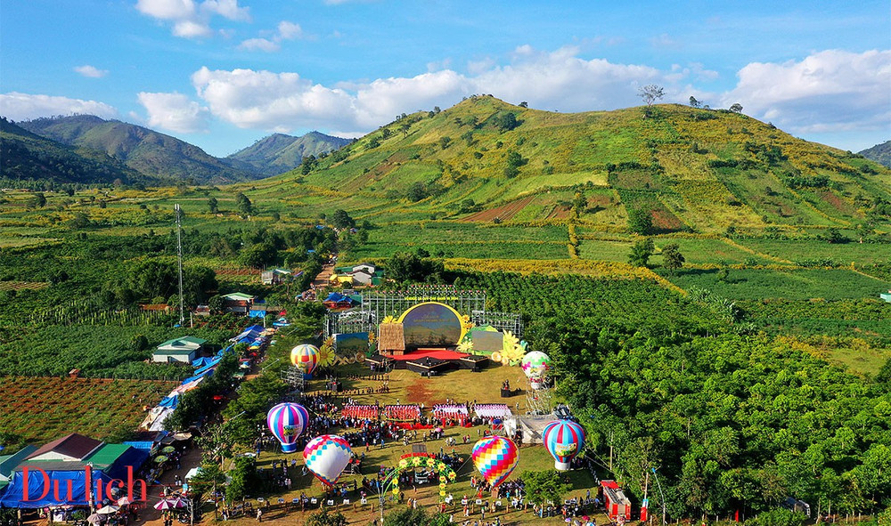
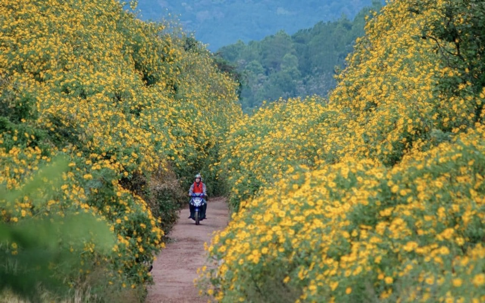

Điểm đến hấp dẫn
Chư Đăng Ya nổi tiếng với hoa dã quỳ nở rộ vào cuối năm, những cánh đồng nông sản xanh mướt và không khí trong lành.

Đây là địa điểm lý tưởng cho du lịch sinh thái, trải nghiệm văn hóa bản địa và khám phá thiên nhiên Tây Nguyên.
Lễ hội hoa giã quỳ
Lễ hội hoa dã quỳ Chư Đăng Ya là sự kiện nhằm tôn vinh giá trị di sản mà thiên nhiên đã ban tặng cho con người và di sản văn hóa do người dân địa phương tự tạo ra. Bên cạnh đó, lễ hội đặc sắc này còn góp phần bảo tồn, phát huy giá trị truyền thống của các dân tộc trên địa bàn huyện.

Lễ hội hoa dã quỳ núi lửa Chư Đăng Ya được tổ chức tại làng Ia Gri, xã Chư Đăng Ya, huyện Chư Păh, tỉnh Gia Lai. Nơi đây nổi tiếng với ngọn núi lửa Chư Đăng Ya đã ngừng hoạt động hàng triệu năm trước, nay trở thành điểm du lịch hấp dẫn với thảm hoa dã quỳ vàng rực. Lễ hội thường diễn ra vào tháng 11 hàng năm, thời điểm hoa dã quỳ nở rộ nhất, phủ vàng khắp sườn núi và triền đồi. Thời gian tổ chức có thể thay đổi theo từng năm nhưng thường kéo dài khoảng một tuần, với các hoạt động trọng tâm diễn ra từ ngày 10/11 đến 12/11.
⬅ Trang chủ